Overview
We implemented rendering scenes with lighting! More importantly, we used several efficient algorithms (BVH, Russian Roulette for light bounces, adaptive sampling) that result in good-looking renders in a reasonable time.
Part 1: Ray Generation and Scene Intersection (20 Points)
Ray generation: We used the formula for the center of the virtual camera sensor $(-tan(\frac{hFov}{2}), -tan(\frac{hFov}{2}), -1)$, projected it to world space, and made sure the ray is normalized.
Triangle intersection: The triangle intersection algorithm checks if a ray intersects a triangle by calculating the triangle's edge vectors and using cross products to find vectors orthogonal to the ray direction and triangle edges. It then computes a denominator and intersection parameters (distance along the ray and Barycentric coordinates) to determine if the intersection point lies within the triangle and the ray's bounds. If an intersection occurs, the algorithm updates an intersection structure with the distance, the interpolated normal at the point, and material properties, efficiently determining the point of intersection and relevant surface information.
| CBempty.dae | CBspheres.dae | CBbunny.dae |
|---|---|---|
 |
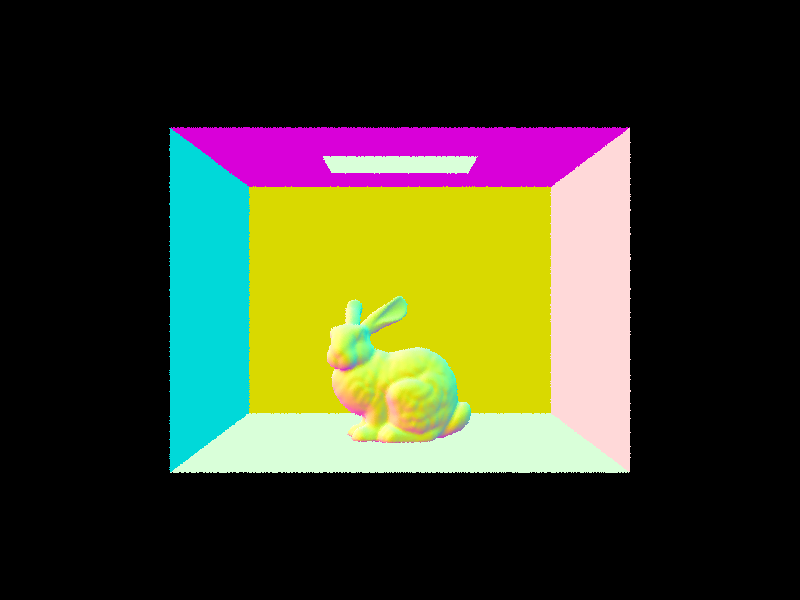 |
Part 2: Bounding Volume Hierarchy (20 Points)
In the BVH algorithm, we divide space along an axis (X, Y, or Z) that gives us the most "benefit",
measured
by the distance between the max and min centroid of bounding boxes.
We continue recursively dividing space in this way for the "left" and "right" sides of the box
until the max_leaf_size is reached.
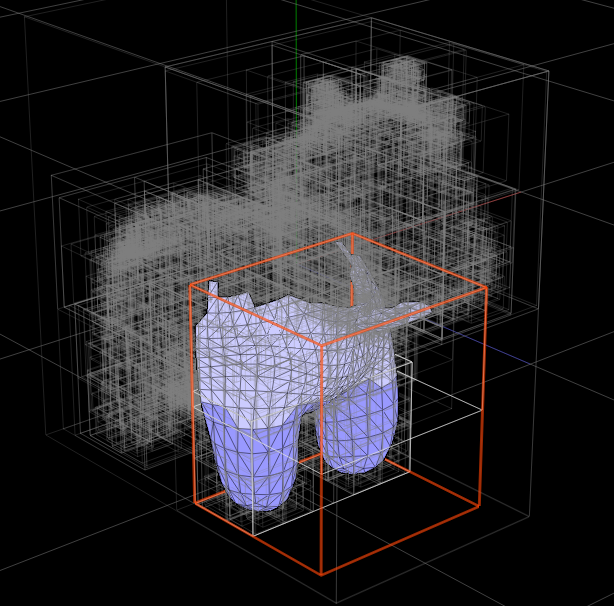
Below we show three different .dae files rendered using BVH. The render time after implementing BVH is consistently well under 1 second and stays relatively consistent even as the scene is more complex. In contrast, the old render time without BVH grows proportionally to the number of primitives (~0.004s per primitive) and took a full 10 minutes to render Lucy.
| Image | # Primitives | Avg rays/sec | Render time | Old render time |
|---|---|---|---|---|
| 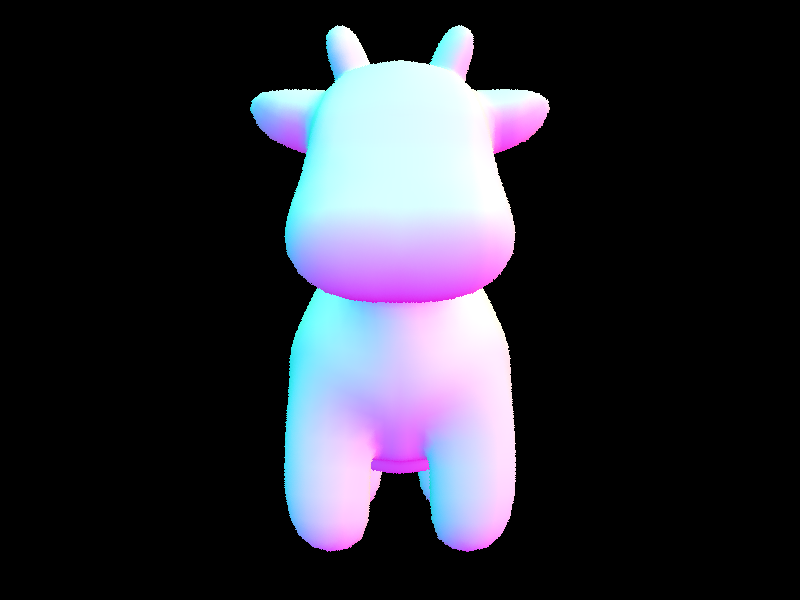 | 5856 | 4.3389 mil | 0.0377s | 21.0473s |
| 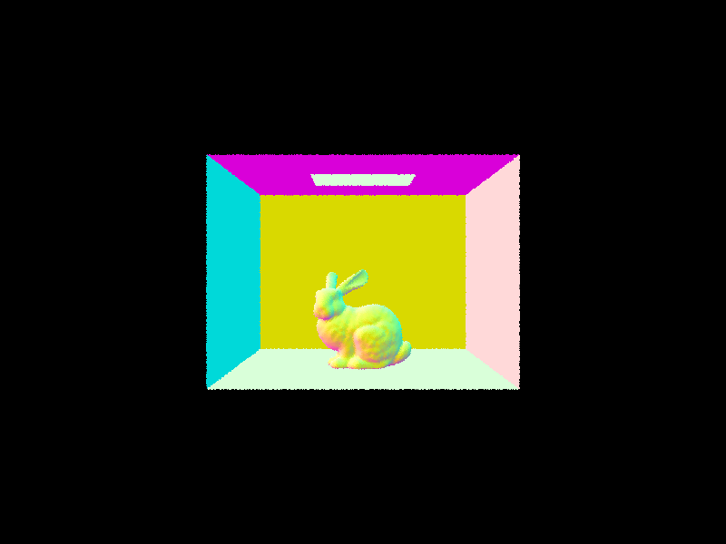 | 28588 | 4.6903 mil | 0.0463s | 100.9643s |
| 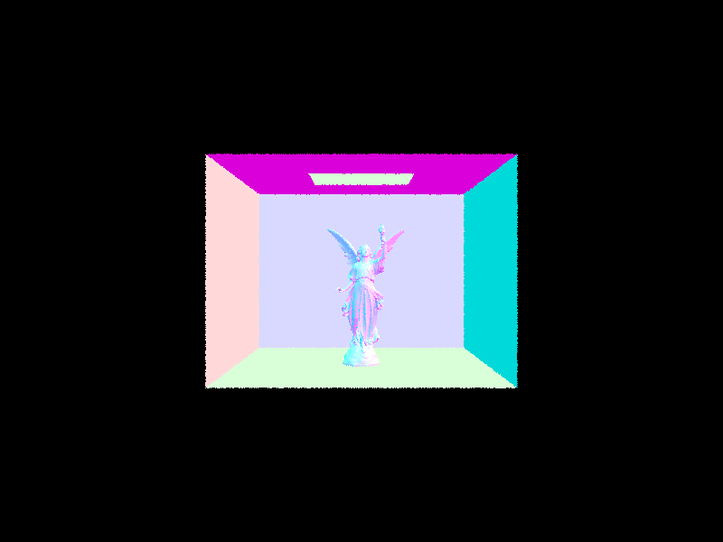 | 133796 | 4.2943 mil | 0.0401s | 595.8577s |
Part 3: Direct Illumination (20 Points)
Walk through both implementations of the direct lighting function.
Hemisphere Sampling samples light uniformly from all directions over the hemisphere above the hit point. We generate a coordinate system for the hit point with the normal aligned with the Z direction, and then sample random directions in the hemisphere around the hit point. For each sample, a new ray is cast towards the sampled direction, and if the ray intersects with an object, the contribution of the light at that intersection is calculated based on the BSDF and emission of the intersected object. The final estimated direct lighting is accumulated and returned.
Importance Sampling focuses on sampling light from directions that are more likely to contribute significantly to the final color seen at the hit point, reducing the variance. For each light source, we sample multiple directions towards the light, calculate the contribution of the light at the hit point based on the BSDF and emission of the intersected object, and account for visibility by checking for any obstructions between the hit point and the light. The final estimated direct lighting is accumulated and normalized by the number of samples.
| s=1, not H | Hemisphere | |
|---|---|---|
| l=1 | 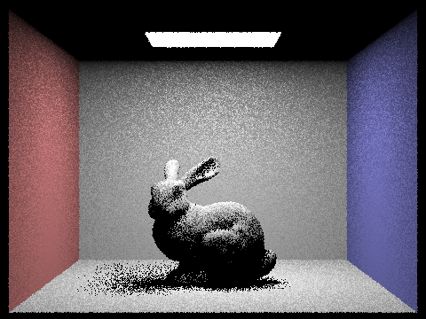 | 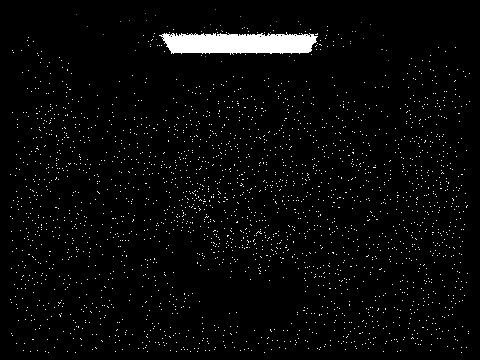 |
| l=4 | 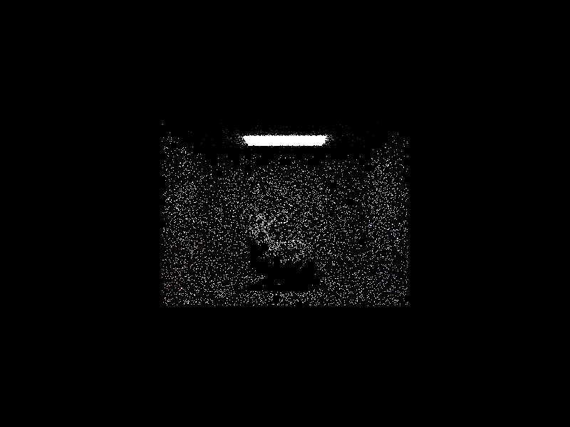 | |
| l=16 | 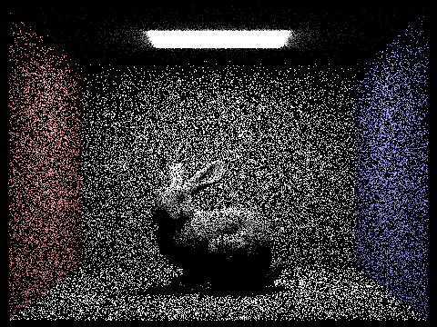 | |
| l=64 | 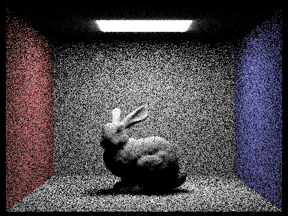 |
Compare the results between uniform hemisphere sampling and lighting sampling in a one-paragraph analysis.
With one sample per pixel, the noise levels in the soft shadows are still high for both sampling methods. However, comparing the images below, uniform hemisphere sampling clearly shows more noise in soft shadows with fewer light rays due to the non-discriminatory approach of sample distribution.
Part 4: Global Illumination (20 Points)
Walk through your implementation of the indirect lighting function.
To implement global illumination, we introduce indirect lighting using recursion.
For each light bounce, we sample using the BSDF sample_f(),
which gives the new direction to bounce to and the probability (pdf) of sampling in that direction.
We recursively bounce until the maximum bounce depth is reached or, if enabled, it randomly terminates by
Russian
roulette, in which the direct lighting from one_bounce_radiance is returned.
The radiance from each bounce is accumulated by multiplying the radiance from BSDF and the cosine of the angle
between
the incoming direction and the surface normal, normalized by the sampling pdf and adjusted for the Russian
roulette
termination probability.
Show some images rendered with global (direct and indirect) illumination. Use 1024 samples per pixel.
|
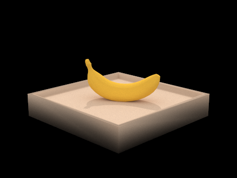
|
|
Pick one scene and compare rendered views first with only direct illumination, then only indirect illumination. Use 1024 samples per pixel. (You will have to edit PathTracer::at_least_one_bounce_radiance(...) in your code to generate these views.)
|
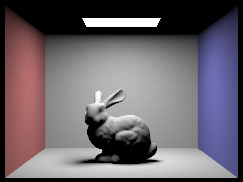
|
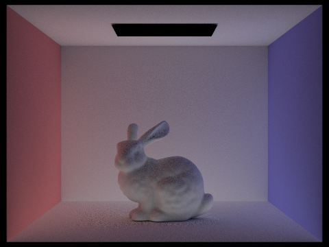
|
Most of the light comes from the direct illumination (equivalent to one bounce). The richness of the scene, such as the color of the walls being reflected on the sides of the bunny, comes from indirect illumination.
For CBbunny.dae, compare rendered views with max_ray_depth set to 0, 1, 2, 3, and 100 (the -m flag). Use 1024 samples per pixel.
|
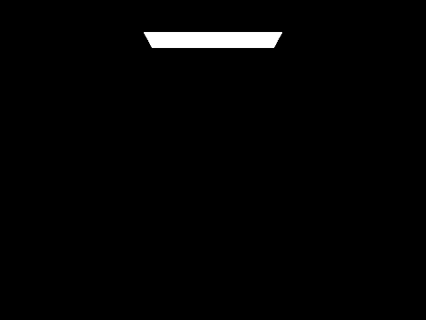
|
|
|
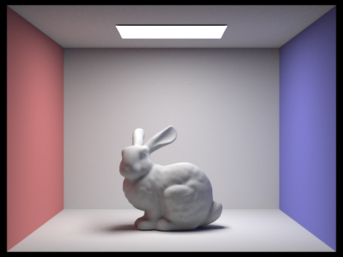
|

|
|
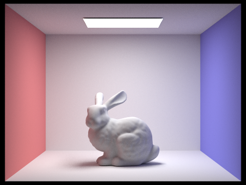
|
More bounces leads to a richer, more realistic render. It also has a tendency to increase the overall brightness of the scene. Since the illumination decays as it bounces on surfaces that absorbs light, it converges relatively quickly (ray depth = 3 vs ray depth = 100 are similar).
Pick one scene and compare rendered views with various sample-per-pixel rates, including at least 1, 2, 4, 8, 16, 64, and 1024. Use 4 light rays.

|
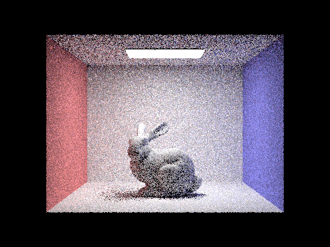
|
|
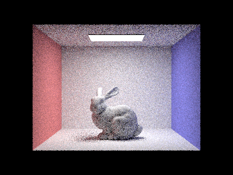
|
|
|
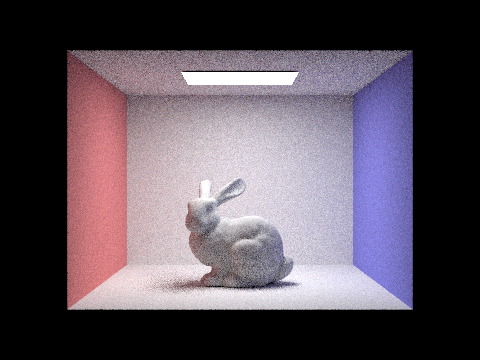
|
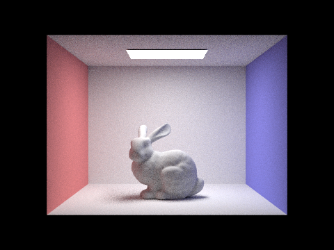
|
|
|
As the samples per pixel increases, the noisiness is reduced.
Part 5: Adaptive Sampling (20 Points)
Explain adaptive sampling. Walk through your implementation of the adaptive sampling.
Adaptive sampling dynamically adjusts the number of rays traced per pixel based on the variance in the light contribution of the samples: it continues sampling until the confidence interval of the estimated radiance falls below a specified threshold, which minimizes noise while optimizing computational effort. In our implementation, after each batch of samples, it checks if the uncertainty in the average radiance is acceptable; if so, it stops sampling, otherwise it continues until the maximum samples are reached.
Pick two scenes and render them with at least 2048 samples per pixel. Show a good sampling rate image with clearly visible differences in sampling rate over various regions and pixels. Include both your sample rate image, which shows your how your adaptive sampling changes depending on which part of the image you are rendering, and your noise-free rendered result. Use 1 sample per light and at least 5 for max ray depth.
|
|

|
|
|
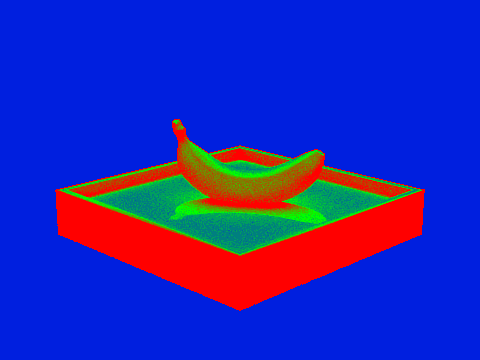
|
Part 6: Extra Credit
Surface Area Heuristic for BVH
The surface area heuristic takes more time to generate upfront, but the benefit is that it minimizes the expected cost of ray-primitive intersections, which means more efficient ray tracing, especially in complex geometries. In order to speed up the calculation, we used a bucketing strategy, which reduced BVH time from 40 seconds for CBbunny.dae to a less than a second. Additionally, We set an arbitrary traversal cost of 1, but this could be fine-tuned for the scene.
| Object Median | Surface Area |
|---|---|
| 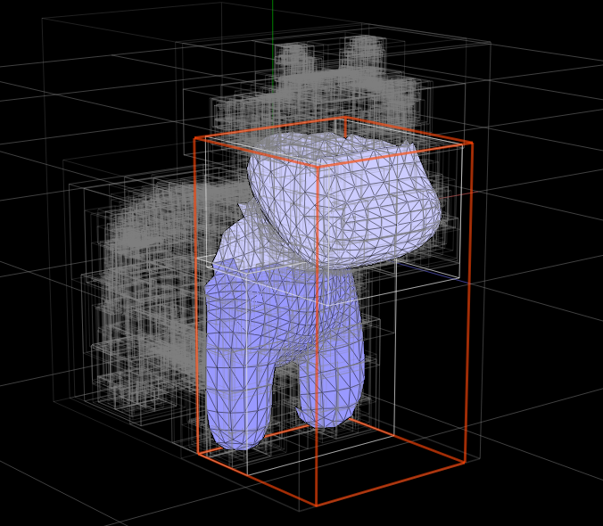 |
| Image | File (# primitives) | Object Median BVH Time | Surface Area BVH Time |
|---|---|---|---|
| cow.dae (5856 primitives) | 0.0014 sec | 0.0111 sec | |
| CBbunny.dae (28588 primitives) | 0.0089 sec | 0.0589 sec | |
| CBlucy.dae (133796 primitives) | 0.0512 sec | 0.9736 sec |
| banana.dae, s=# | OM Rendering Time | SA Rendering Time |
|---|---|---|
| 1 | 0.1257s | 0.1210s |
| 8 | 1.0155s | 0.9689s |
| 64 | 8.3073s | 7.9578s |
| 1024 | 131.8002s | 129.3231s |